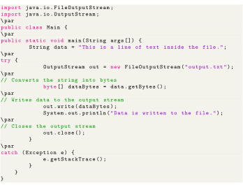

Next: Java Reader/Writer Up: Java I/O Streams Previous: Java OutputStream Class Contents
The OutputStream class provides different methods that are implemented by its subclasses. Here are some of the methods:
Here is how we can implement OutputStream using the FileOutputStream class.
